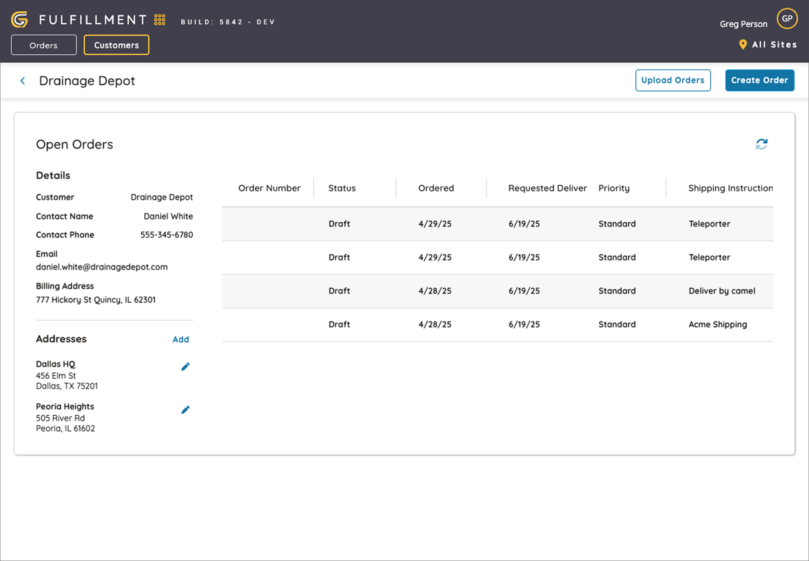

Logistics
The more time you spend as a product designer working across different industries, the more you realize that the problems you are solving are often very similar. Each solution may result in various looks and use different terms for the same old things, but the underlying issues that we're working to solve are often very similar.
That's not to say that every industry isn't special in its own way. However, the key to success in designing products or services is being able to recognize common patterns across industries that lurk under the veneer.
What The Heck Is 'Reverse' Logistics?
While still hard at work on our healthcare platform, our team had the opportunity to design a warehouse management system for a client that provided reverse logistics services for a large retailer. The client was struggling with their existing, ad-hoc inventory management process. Their inefficiency was causing the retailer to question the accuracy of invoices often resulting in delayed payments.
Yard Management module. (showing configuration for multi-module, multi-site)
Begun 2023 (in active development)
Design Lead / Lead UI Engineer
Myself, Lead Developer, Jr. Developer, Database Admin, Product Manager, Industry Consultants
My logistics work began with a client request for an alternative to managing thier business through a set of independent systems. Their data was scattered and required manually moving business records between tools. These manual processes resulted in discrepencies in their records and eroded trust with the clients that the business served. Decentralized and unstructured records prevented insight into business performance, making maintaing their required metrics a challenge.
I contributed to this project by gathering requirements, diagraming primary workflows, crafting user stores, creating interactive prototypes, and developing the front-end designb system in both Angular and Flutter.
The project kicked off with a weekend of on-site requirements gathering where the team talked with staff members to learn what challenges they faced and how we could help make their jobs easier. We observed their daily operations for managing their warehouse and trailer inventories, and the client walked us through the multiple systems they employed to collect and share data.
After talking with the team, we found several problems with their daily work. They had trouble keeping track of what was in inventory, what was on each trailer, and making sure their different computer systems showed the same information. Once we understood these issues, we concluded that a more integrated approach to inventory management was needed. We decided to apply our healthcare platform's principles toward resouce management to create a more cohesive solution for their logistics operations.

Warehouse Management System Flow Diagram
Over the next few months, we worked with the client to build a simpler system that solved their main problems. We created one central place to track their inventory in real-time, and made it easy for workers to log and update the contents of inbound and outbound trailers.
Mobile App - Production Views (Flutter)
WebApp - Warehouse Door View (Angular)
WebApp - Warehouse Shift Report View (Angular)
Reimagining The Logistics Process
In early 2025, our team partnered with supply chain veterans to further enhance our understanding of logistics operations. By collaborating with experts in the field, we aimed to identify best practices and innovative solutions that could be applied to challenges across the industry. During this phase my role centered around insisting that our industry resources think through every aspect of a supply chain and identify opportunities for improvement. Their breakdowns were key in developing my user stories that served as a North Star for all proposed designs, implementation, and evaluation.
Managing warehouse operations is just one part of the logistics process. Viewing supply chain operations from a single point of view quickly revealed gaps related to understanding processes that warehouse personnel depended on to function. By looking at the entire supply chain, we began to think about ways to improve efficiency across all areas of the operation. Our WMS product underwent a rebrand and prepared for a growing set of siblings.

WebApp - Yard 'Heatmap' View (Angular)
Dwell time is a critical metric for optimizing logistics operations, as it directly impacts resource utilization, overall efficiency, and business costs. By bringing the entire logistics process onto a unified platform, we were able to collect relevant data on trailers, drivers, and transported goods. Understanding how long resources spend sitting on the yard or in the warehouse allows us to surface assets that have exceeded dwell thresholds or soon will be.
We broke down supply chain operations into a set of modules that, in addition to warehouse processes, would manage a buiness's yards, transit, fulfillment, etc. These modules could be developed independently and composed to meet the specific needs and scope of our clients' logistics processes. Leaning into my background designing mapping solutions, our first new module was a new yard management system that leveraged geospatial data to optimize trailer operations and improve overall efficiency.
WebApp - Warehouse View (Angular)

WebApp - Fulfillment View (Angular)